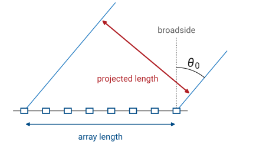
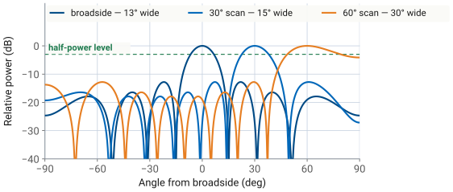
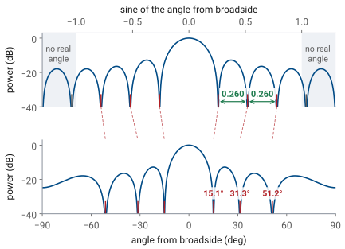
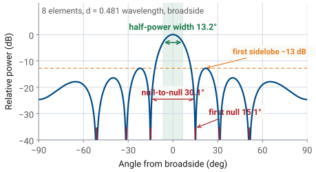
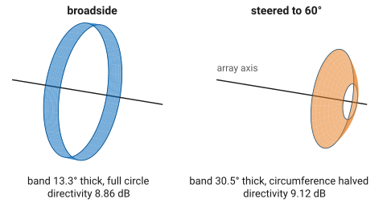
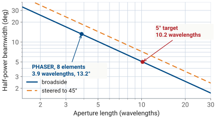

L20 - Array Factor and Beamwidth#
Array Factor and Beamwidth
The aperture measured in wavelengths, \(Nd/\lambda\), sets the beamwidth, and steering widens it by \(1/\cos\theta_0\).
Lesson 20 · Antennas, Phased Arrays, and Radar Systems · Dr. Neil Rogers
Printing
To print the slides, switch to present mode and print: one slide a sheet, with room for notes. Print from read mode for the whole lesson.
Learning Objectives
- I can derive the array factor for an arbitrary linear array and apply pattern multiplication.
The Uniform Array Factor
The L18 Lab beam measured about 13° at boresight and wider at 45°; this function produces both.
The peak sits at \(\psi = 0\), which is \(\theta = \theta_0\).
The midterm project measured the same widths, nulls, and sidelobes from a pattern cut.
The Antenna Pattern Measurement midterm project, assigned in Lesson 9, measured all of this from the other direction. The quantities you extracted from a measured cut — the half-power width, the null positions, the sidelobe level referenced to the peak — are exactly the quantities this lesson computes from theory, so keep your project data at hand.
In the L18 Lab you steered the array across the room and watched the beam widen as it went. The main lobe was about 13° across at boresight and noticeably wider at 45°, and the pattern sat on a floor of sidelobes that moved with the beam. Lesson 16 gave us the closed form that produces all of that. Today we extract numbers from it: the half-power beamwidth of a steered array, the angle of every null, the directivity, and the design step in reverse, which takes a beamwidth specification and finds the array size.
Lesson 16 summed \(N\) equal-amplitude elements with a progressive phase and collapsed the geometric series into the normalized uniform array factor
Everything about the shape of the pattern is in that one function of \(\psi\). The array’s physical parameters enter only through the map from angle to \(\psi\), and the beam peak is wherever \(\psi = 0\), which is \(\theta = \theta_0\).
The Sinc Near the Peak
Near the peak \(\psi\) is small, so \(\sin(\psi/2) \approx \psi/2\).
The array is a sampled aperture of length \(L = Nd\), and this is L6’s uniform line-source pattern.
Near the peak, \(\psi\) is small, so \(\sin(\psi/2) \approx \psi/2\) and
That is the same \(\sin u / u\) we found in Lesson 6 for a uniform line source, and the reason is physical: an \(N\)-element uniform array with spacing \(d\) is a sampled aperture of length \(L = Nd\). Near the peak, where the sampling is too fine to matter, the array’s pattern matches the continuous aperture’s. The length is \(Nd\) rather than the \((N-1)d\) between the end elements because each element accounts for one spacing \(d\) of aperture, the sampled line source of Lesson 16.
Half-Power Beamwidth
\(\sin u/u\) falls to half power at \(u = 1.392\).
Near the beam, \(\sin\theta - \sin\theta_0 \approx (\theta - \theta_0)\cos\theta_0\).
\(Nd/\lambda\) sets the beamwidth, with L6’s line-source constant. Steering foreshortens the aperture and widens the beam by \(1/\cos\theta_0\).
Power is half the peak where \(\lvert \sin u/u\rvert = 1/\sqrt{2}\), which happens at \(u = 1.392\). Solving outward from there:
The last step is where the scan angle enters. For a beam that is narrow compared with its distance from broadside, \(\sin\theta - \sin\theta_0 \approx (\theta - \theta_0)\cos\theta_0\), so the half-width is
and the full width is twice that:
The aperture measured in wavelengths, \(Nd/\lambda\), sets the beamwidth. The constant 0.886 is the uniform line-source constant from Lesson 6 and Lesson 15, unchanged, because a uniform array of length \(Nd\) is that line source sampled at \(N\) points. Steering off broadside foreshortens the aperture as seen from the beam direction, and the beam widens by \(1/\cos\theta_0\).

The figure is Lesson 18’s: seen from the beam direction, the array’s projected length is \(Nd\cos\theta_0\).
Scan Broadening of the Course Array

\(N = 8\), \(d = 14\ \text{mm}\), worked at 10.3 GHz: \(Nd = 3.85\ \lambda\).
Broadside 13.2°; steered to 30°, 15.2°.
At 60° the rule gives 26.4° and the pattern 30.5°: a wide-scanned beam is always wider than the rule.
Worked example — the PHASER array
The course array has \(N = 8\) patches on \(d = 14\ \text{mm}\) centers. We work this example at 10.3 GHz; your kit’s Find HB100 frequency will differ, and the L20 Lab has you recompute at it. At 10.3 GHz, \(\lambda = 29.1\ \text{mm}\), so \(d/\lambda = 0.481\) and the aperture is \(Nd = 112\ \text{mm} = 3.85\ \lambda\).
Broadside: \(\theta_\text{HP} = 0.886/3.85 = 0.230\ \text{rad} = 13.2^\circ\).
Steered to 30°: \(13.2^\circ/\cos 30^\circ = 15.2^\circ\), against 15.4° from the pattern.
Steered to 45°: \(13.2^\circ/\cos 45^\circ = 18.7^\circ\).
Steered to 60°: the formula gives 26.4°, while the pattern itself is 30.5° wide. The small-angle step above is the approximation that fails, and it underestimates the width — a wide-scanned beam is always wider than \(0.886\lambda/(Nd\cos\theta_0)\) predicts.
Null Locations
Nulls fall every \(\lambda/Nd\) in \(\sin\theta\), and only where \(\lvert\sin\theta\rvert \le 1\).

A null is a zero of the numerator that is not also a zero of the denominator. The numerator vanishes when
except when \(m\) is a multiple of \(N\), because then \(\sin(\psi/2)\) vanishes as well and the ratio returns to unity. Those are the main lobe and its repeats, the grating lobes of Lesson 23, not nulls. Converting through \(\psi = kd(\sin\theta - \sin\theta_0)\):
The nulls are equally spaced in \(\sin\theta\), not in \(\theta\). The pattern is a comb on the \(\sin\theta\) axis with teeth every \(\lambda/Nd\), and the arcsine that brings it back to real angles crowds the teeth together near broadside and spreads them apart toward the horizon. A null exists only if the right-hand side lands inside the visible region \(\lvert \sin\theta\rvert \le 1\); values outside it correspond to no real direction, and there is no null.
Taking \(m = 1\) on both sides of a broadside beam gives the first-null beamwidth
Anatomy of a Uniform-Array Pattern

\(\lambda/Nd = 0.260\): nulls at 15.1°, 31.3°, and 51.2°; the fourth falls outside the visible region.
FNBW is 30.1°, about 2.3 times the half-power width.
The nulls are sharp, so a coarse sweep can miss them.
Worked example — nulls of the course array
With \(Nd/\lambda = 3.85\), the tooth spacing is \(\lambda/Nd = 0.260\) in \(\sin\theta\). Broadside, the nulls sit at
\(\sin\theta = 0.260 \rightarrow 15.1^\circ\), \(\quad 0.520 \rightarrow 31.3^\circ\), \(\quad 0.780 \rightarrow 51.2^\circ\), \(\quad 1.040 \rightarrow\) outside the visible region.
So the eight-element array shows three nulls per side, not seven, and \(\text{FNBW} = 2(15.1^\circ) = 30.1^\circ\). Steer the same array to 30° and the first nulls land at \(\sin\theta = 0.5 \pm 0.260\), which is 13.9° and 49.5°. The beam is no longer symmetric about its own peak: the lower null sits 16.1° below it and the upper null 19.5° above, for a first-null beamwidth of 35.6°.
The null-to-null width runs about 2.3 times the half-power width for a uniform array. That ratio is worth remembering when you read a measured sweep, because the nulls are sharp features that a coarse angle grid can miss entirely, while the half-power points are easy to interpolate.
Sidelobe Level
Beamwidth and null positions scale with \(Nd/\lambda\); the sidelobe level does not. A uniform array holds its first sidelobe near −13 dB at 8 elements or 800. L22’s taper lowers it and widens the beam.
Note
Beamwidth and null positions both scale with \(Nd/\lambda\); the sidelobe level does not. A uniform array holds its first sidelobe at about −13 dB whether it has 8 elements or 800. Lesson 22 changes that number by changing the amplitude distribution, and it widens the beam to do it.
Directivity of a Uniform Array
At \(d = \lambda/2\) every cross term vanishes, and \(D = N\) exactly.
This is L15’s line-source directivity with \(L = Nd\).
Doubling \(N\) adds 3 dB by halving the beamwidth.
Directivity is the peak radiation intensity over its average, so for an array of isotropic elements it is \(N^2\) (the coherent peak) divided by the average of \(\lvert AF_N\rvert^2\) over the sphere. Doing that average term by term leaves a double sum whose cross terms are sinc functions of the element separations:
At \(d = \lambda/2\) every cross term contains \(\sin(\pi(m-n))\), which is zero, and the double sum collapses to the \(N\) diagonal terms:
Written in that last form, the result carries over to other spacings: for any uniform broadside array with \(d\) below a wavelength,
which is the long uniform line-source directivity from Lesson 6 with \(L = Nd\) — the same sampled-aperture argument that produced the 0.886. Directivity grows linearly with aperture in wavelengths. Doubling the element count at fixed spacing doubles \(D\) and adds 3 dB, and it does so by halving the beamwidth, not by making any element radiate harder.
Directivity of the Course Array
The center four alone give 5.9 dB, 3 dB less, and twice the beamwidth.
Pattern multiplication adds in dB while the element pattern is flat across the main lobe (L21).
Worked example — directivity of the course array
\(D \approx 2(8)(0.481) = 7.7\), or \(10\log_{10}(7.7) = 8.9\) dB. Turning off four elements to leave the center four gives \(D \approx 3.85 = 5.9\) dB, exactly 3 dB less, and doubles the beamwidth from 13.2° to 26.4° by the formula (27.4° solved exactly).
That 3 dB is the drop in directivity, and the L20 Lab measures a different quantity, the received peak. On receive, the array adds the element voltages in phase, so the peak voltage is proportional to \(N\) and the peak power to \(N^2\). Halving the active elements therefore drops the ideal received peak by 6 dB: 3 dB because half the elements collect half the power, and 3 dB because the beam’s directivity halves. The dry-run kit read 5.1 and 4.8 dB per halving, so expect about \(5 \pm 1\) dB on your own kit. The cause of the shortfall is still open, and it does not touch the beamwidths, which the lab grades.

The figure is the L20 Lab’s, drawn at the dry-run kit’s 10.408 GHz.
The eight elements are patches, not isotropic radiators, so the array’s gain is the element gain plus the array gain. Pattern multiplication becomes addition in dB:
Eight half-wave dipoles, at 2.15 dBi each, would make an 11.0 dBi array. The sum holds while the element pattern is close to flat across the main lobe, and Lesson 21 takes up the case where it is not.
Directivity Under Steering
Steering barely changes the array factor’s directivity. The beam is a cone about the array axis: its wall thickens by \(1/\cos\theta_0\) and its circumference shrinks by \(\cos\theta_0\). The scan loss measured on hardware comes from the element pattern (L21).

Note
The array-factor directivity of a linear array barely changes as you steer, even though the beam visibly widens. The main lobe of a linear array is a cone about the array axis; steering off broadside thickens the cone wall by \(1/\cos\theta_0\) and shrinks its circumference by \(\cos\theta_0\), leaving the solid angle nearly unchanged. For the course array the array-factor directivity is 8.86 dB at broadside, 8.91 dB at 45°, and 9.12 dB at 60°. The scan loss you measure on real hardware comes from the element pattern, not from the array factor, which is why the PHASER loses gain toward the edges of its scan volume. That is Lesson 21’s subject.
Sizing an Array
Beamwidth sets the aperture, at the widest scan:
\[Nd = \frac{0.886\ \lambda}{\theta_\text{HP}\ \cos\theta_{0,\text{max}}}\]Scan volume sets the spacing (L23):
\[d < \frac{\lambda}{1 + \lvert\sin\theta_0\rvert_\text{max}}\]The element count is \(N = Nd/d\), rounded up; each element is an antenna, a phase shifter, an amplifier, and a control line.
We can run every result so far in reverse. A radar or communications requirement arrives as a beamwidth and a scan volume, and three steps give the array.
Aperture. Invert the half-power formula, with \(\theta_\text{HP}\) in radians:
\[Nd = \frac{0.886\ \lambda}{\theta_\text{HP}}.\]If the specification has to hold across a scan volume, divide by \(\cos\theta_0\) at the widest scan angle, because that is where the beam is widest.
Spacing. Lesson 23 derives the condition that keeps grating lobes out of visible space:
\[d < \frac{\lambda}{1 + \lvert\sin\theta_0\rvert_\text{max}}.\]At \(d = \lambda/2\) the criterion holds for any scan angle, which is why half-wavelength spacing is the default.
Element count. \(N = Nd/d\), rounded up. Every element is an antenna, a phase shifter, an amplifier and a control line, so this is the number that sets the cost of the array.
Limits of the 0.886 Rule
The widget below runs the first two steps in reverse so you can see them. Set \(N\) and \(d/\lambda\) and watch the main lobe narrow as the aperture grows; the green bar is the half-power width read off the pattern and the dotted bar underneath is what \(0.886\lambda/(Nd\cos\theta_0)\) predicts. Steer toward ±60° and two things happen at once: the beam widens, and the dotted bar falls short of the real one. Push \(d/\lambda\) toward 1.0 with the beam steered and a grating lobe enters from the edge of visible space.
A 5° Pencil Beam
Goal: \(\theta_\text{HP} \le 5^\circ\) at 10 GHz, scan ±45°.
Step |
Result |
|---|---|
Aperture for 5° |
\(Nd = 305\ \text{mm} = 10.2\ \lambda\) |
Spacing for ±45° |
\(d = \lambda/2 = 15\ \text{mm}\) |
Count |
\(N = 21\): 4.8° broadside, 6.8° at 45° |
5° held at 45° |
\(N = 29\): 43.5 cm, 14.6 dB |

Worked example — a 5° pencil beam at X-band
Specification: \(\theta_\text{HP} \le 5^\circ\) at 10 GHz, scanning to ±45°. At 10 GHz, \(\lambda = 30\ \text{mm}\).
Step |
Work |
Result |
|---|---|---|
Aperture for 5° broadside |
\(Nd = 0.886(30)/0.0873\) |
\(305\ \text{mm} = 10.2\ \lambda\) |
Spacing for ±45° scan |
\(d < \lambda/(1+\sin 45^\circ) = 0.586\ \lambda\) |
take \(d = \lambda/2 = 15\ \text{mm}\) |
Element count |
\(N = 305/15 = 20.3\), round up |
\(N = 21\), aperture 315 mm |
Broadside beamwidth |
\(0.886(30)/315\) |
4.8° |
Broadside directivity |
\(D \approx 2(21)(0.5) = 21\) |
13.2 dB |
Now check the corner of the scan volume. At 45° the same array gives \(4.8^\circ/\cos 45^\circ = 6.8^\circ\), which misses the specification by nearly 2°. Holding 5° at 45° requires \(Nd = 305/\cos 45^\circ = 431\ \text{mm}\), so \(N = 29\) elements at half-wavelength spacing, a 43.5 cm aperture and 14.6 dB.
The last 45° of scan volume is what added the eight extra channels. Whether that is the right trade depends on how much of the time the beam sits out at the edge of the volume, and it is a question worth asking before we fix the aperture.
Predictions for the L20 Lab
Elements |
\(Nd/\lambda\) |
HPBW |
FNBW |
Sidelobe |
|---|---|---|---|---|
8 |
3.85 |
13.3° |
30.1° |
−13 dB |
Center 4 |
1.92 |
27.4° |
63° |
−11 dB |
Center 2 |
0.96 |
63° |
180° |
none |
Configuration |
Aperture \(Nd\) |
HPBW |
FNBW |
First sidelobe |
|---|---|---|---|---|
8 elements |
\(112\ \text{mm} = 3.85\ \lambda\) |
13.3° |
30.1° |
−13 dB |
Center 4 |
\(56\ \text{mm} = 1.92\ \lambda\) |
27.4° |
63° |
−11 dB |
Center 2 |
\(28\ \text{mm} = 0.96\ \lambda\) |
63° |
180° by convention |
none |
The HPBW column is the half-power width of the array factor solved exactly, the same values the L20 Lab uses. The 0.886 rule gives 13.2°, 26.4°, and 52.8°, and it falls further short as the array gets smaller. All values are at 10.3 GHz; recompute them at your kit’s Find HB100 frequency.
The L20 Lab sweeps the PHASER with all eight elements on, then with the center four, then with the center pair, and measures the beamwidth each time. Predict first, measure second, reconcile third. Every number in the table comes from this lesson, and three details in it are worth stating before the lab rather than after.
Three Details in the Prediction Table
Two elements have no null or sidelobe (\(\lambda/Nd > 1\)); HPBW is 63°, not the formula’s 53°.
The first sidelobe is −12.8 dB at 8 elements and −11.3 dB at 4.
Samples sit one 2.8125° phase step apart: about 0.9° near broadside.
The two-element row has no null and no sidelobe. With \(Nd\) under a wavelength, \(\lambda/Nd\) exceeds 1 and the first null falls outside the visible region, so the pattern is a single broad hump and we quote the first-null beamwidth as 180° by convention. Its half-power width is 62.6°, not the 52.8° the small-angle formula returns, because a beam that wide breaks the approximation used to derive it.
The first sidelobe drifts with element count. The −13 dB figure is the large-array limit; eight elements give −12.8 dB and four give about −11 dB. All three are far above the sweep’s noise floor, which sits roughly 23 dB below the uniform-taper peak.
The sweep is a discrete grid. With Use Bits on, as in every lab preset, the GUI steps the element-to-element phase one phase-shifter LSB, 2.8125°, per point. One step moves \(\sin\theta\) by \(2.8125^\circ/173.2^\circ = 0.0162\), which is 0.93° of angle at broadside and 1.07° at 30°, widening as \(1/\cos\theta\). A half-power width read as the span between the outermost samples above −3 dB comes out short by up to one step: 12.1° to 13.1° for the full array, against 13.3° from the pattern. Interpolating between the two samples that straddle each −3 dB crossing recovers the width to within 0.1°. The nulls are read at their lowest sample, which puts the measured FNBW between 30.1° and 31.1°. That spread comes from the sampling grid, not from the array.
Summary: Beamwidth
Symbol / idea |
What it is |
Number to remember |
|---|---|---|
\(\psi = kd(\sin\theta - \sin\theta_0)\) |
array-factor argument |
beam peak is at \(\psi = 0\) |
\(N\psi/2 = 1.392\) |
half-power point of \(\sin u/u\) |
the source of the 0.886 |
\(\theta_\text{HP} \approx 0.886\lambda/(Nd\cos\theta_0)\) |
beamwidth from aperture and scan |
13.2° for the course array |
Summary: Nulls and Directivity
Symbol / idea |
What it is |
Number to remember |
|---|---|---|
\(\sin\theta = \sin\theta_0 \pm m\lambda/Nd\) |
null locations |
equally spaced in \(\sin\theta\), not \(\theta\) |
\(\text{FNBW} = 2\arcsin(\lambda/Nd)\) |
null-to-null width, broadside |
30.1° at \(N=8\); about \(2.3\ \theta_\text{HP}\) |
\(D \approx 2Nd/\lambda\) |
broadside directivity, uniform array |
\(7.7 = 8.9\) dB at \(N=8\) |
Summary: Gain and Array Sizing
Symbol / idea |
What it is |
Number to remember |
|---|---|---|
\(G_\text{total} = G_\text{element} + D_\text{array}\) |
pattern multiplication in dB |
add the decibels |
\(d < \lambda/(1+\lvert\sin\theta_0\rvert)\) |
spacing for a scan volume |
\(\lambda/2\) scans anywhere |
first sidelobe \(\approx -13\) dB |
set by the taper, not the size |
unmoved by \(N\) or by steering |
Practice
Looking Ahead
The L20 Lab: sweep 8, 4, and 2 elements against the prediction table; bring the calculated column filled in.
L21: real patches have their own pattern, and the array pattern is element pattern times array factor.
Lesson 21 addresses what the array factor leaves out. Every result in this lesson treats the elements as isotropic points, which is why the directivity came out independent of scan angle and why the pattern in the widget is the same at 60° as at boresight. Real patches have their own pattern, it rolls off toward the edges of the scan volume, and the full array pattern is the product of the two. That product is where the array’s measured gain, its usable scan range, and its cross-polarization all come from.
The L20 Lab puts the prediction table above in front of the hardware. You will load the Array Factor preset, sweep the full array, then drop to four elements and two, and compare measured beamwidths against the numbers you calculated today. Bring the calculated column filled in; a measurement you cannot predict within a couple of degrees is a measurement you cannot use to find a fault later. Read the prediction table and the L20 Lab procedure before you go to the bench.